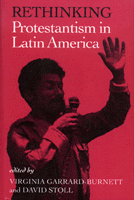

<body bgcolor="#FFFFFF" text="#000000" link="#0000FF" vlink="#CC0000" alink="#CC0000"><center><hr width="350" size="1" align="center" noshade>Latin America's growing evangelical movement sparks political and social change<hr width="350" size="1" align="center" noshade><p><a href="https://cdcshoppingcart.uchicago.edu/Cart/ChicagoBook.aspx?ISBN=9781566391023&&PRESS=temple" target="_top">Buy this book!</a> | <a href="https://cdcshoppingcart.uchicago.edu/Cart/Cart.aspx?PRESS=temple" target="_top">View Cart</a> | <a href="https://cdcshoppingcart.uchicago.edu/Cart/Cart.aspx?PRESS=temple" target="_top">Check Out</a></p><p></p></center><!--none//--><h1>Rethinking Protestantism in Latin America</h1>
<h3>edited by Virginia Garrard-Burnett and David Stoll</h3>
<P>cloth 1-56639-102-4 $89.50, Oct 93, <FONT COLOR=#990033>Available</FONT>
<br>paper 1-56639-103-2 $34.95, Oct 93, <FONT COLOR=#990033>Available</FONT>
<BR> 240 pp
5.5x8.25
22&nbsp;tables
</P><p>Born-again Protestantism in South and Central America is expected to attract one-quarter to one-third of the population by early in the twenty-first century. The diverse case studies in this volume explore facets of the movement such as the role of women, the connection with Catholic mysticism, the politics of supposedly conservative evangelical missionaries, and the implications for existing patterns of authority.
<BR>&nbsp;<h2>Excerpt</h2><P>Excerpt available at <a href="http://www.temple.edu/tempress">www.temple.edu/tempress</a></p>
<BR>&nbsp;<h2>Contents</h2><P>
<p>Introduction: Rethinking Protestantism in Latin America &#150 David Stoll
<br>1. Struggling Against the Devil: Pentecostalism and Social Movements in Urban Brazil &#150 John Burdick
<br>2. The <i>Crentes</i> of Campo Alegre and the Religious Construction of Brazilian Politics &#150 Rowan Ireland
<br>3. Brother Votes for Brother: The New Politics of Protestantism in Brazil &#150 Paul Freston
<br>4. Protestantism in El Salvador: Conventional Wisdom versus the Survey Evidence &#150 Kenneth M. Coleman, Edwin Eloy Aguilar, Jos� Miguel Sandoval, and Timothy J. Steigenga
<br>5. The Reformation of Machismo: Asceticism and Masculinity among Colombian Evangelicals &#150 Elizabeth Brusco
<br>6. Shifting Affiliations: Mayan Widows and <I>Evang�licos</I> in Guatemala &#150 Linda Green
<br>7. Religious Mobility and the Many Words of God in La Paz, Bolivia &#150 Lesley Gill
<br>Conclusion: Is This Latin America's Reformation? &#150 Virginia Garrard-Burnett
<br>Bibliography
<br>About the Contributors
<br>Index
</P><BR>&nbsp;<H2>About the Author(s)</H2>
<P><b>Virginia Garrard-Burnett</b> is Senior Lecturer in the Institute of Latin American Studies and Department of History at the University of Texas at Austin.</P>
<P><b>David Stoll</b> has taught at New York University and is the author of three other books, including <I>Is Latin American Turning Protestant?</I></P>
<P>Contributors: Edwin Eloy Aguilar, Elizabeth Brusco, John Burdick, Kenneth M. Coleman, Paul Freston, Lesley Gill, Linda Green, Rowan Ireland, Jos� Miguel Sandoval, Timothy J. Steigenga, and the editors.</P>
<BR><H2>Subject Categories</H2>
<p><A HREF="/tempress/latin.html" TARGET="_top">Latin American/Caribbean Studies</a>
</p>
<p align="center"><a href="https://cdcshoppingcart.uchicago.edu/Cart/ChicagoBook.aspx?ISBN=9781566391023&&PRESS=temple" target="_top">Buy this book!</a> | <a href="https://cdcshoppingcart.uchicago.edu/Cart/Cart.aspx?PRESS=temple" target="_top">View Cart</a> | <a href="https://cdcshoppingcart.uchicago.edu/Cart/Cart.aspx?PRESS=temple" target="_top">Check Out</a></p><p><font face="Arial" size="1"><a href="copyright.html" onMouseOver="window.status='Web Copyright Policy';return true;" onMouseOut="window.status=''" title="Web Copyright Policy">&copy;</a> 2015 <a href="http://www.temple.edu" target="new" onMouseOver="window.status='Link to Temple University home page';return true;" onMouseOut="window.status=''" title="Link to Temple University home page">Temple University</a>. All Rights Reserved. http://www.temple.edu/tempress/titles/1012_reg.html</font></p>